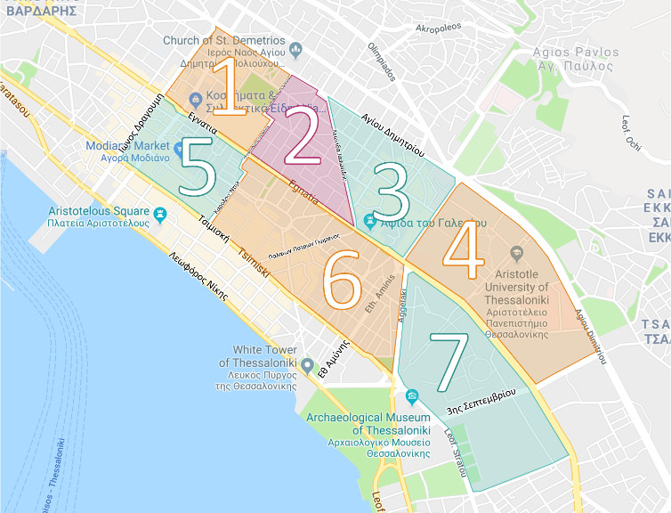
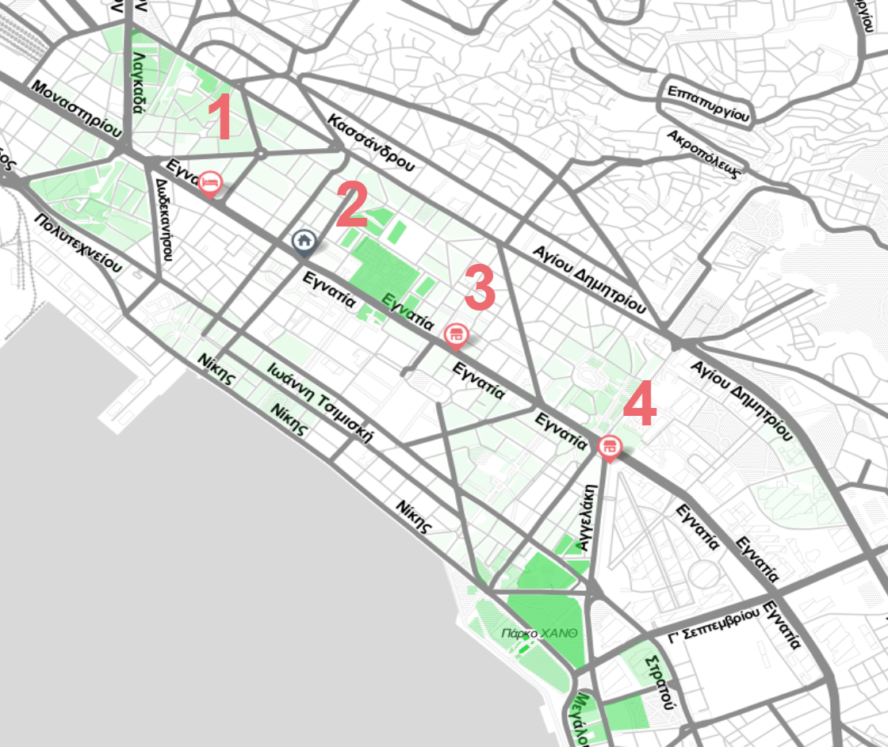

Green High Five: Vertical Gardens along the Egnatia Corridor by Olivia Foster, Hannah Larochelle, Tomás Ringer-Silva, Raymond Schade is licensed under a Creative Commons Attribution-ShareAlike 4.0 International License.
This website contains an interactive map exploring the possibility of integrating vertical gardens into the Egnatia region of Thessaloniki, Greece. Above, the map contains many data layers collected from questionnaires as well as online sources. Below are a list of sites on the Egnatia corridor where vertical garden implementation could take place. Spatial analysis and some structural considerations were taken into account for this demonstration, but more considerations would need to be taken into account before actual construction.
Thessaloniki has a shortage of traditional green spaces. This can be seen below, the city is compared to the World Health Organization (WHO) reccommended minimum average green space per person along with other major cities. The lack of these spaces can be supplemented with vertical gardens in key areas. This website encapsulates research regarding a data driven approach to assessing the feasibility of vertical gardens in the Egnatia region. Potential sites were also explored, each pin on the map represents a visited site. Click on a site pin for a picture of the location and a short description.
Relative Green Space: This layer started as a map of all building plots from The City of Thessaloniki. These plots were separated into two categories, green spaces and everything else. Every plot then had a set radius drawn around it. Every green space that had its center point in this circle had its area counted towards that plot's total. These totals were then turned into shades of green. White is the lowest concentration while bright green is the highest. This overlay shows the uneven and low concentration of green space in the Egnatia region.
AirBnB Heatmap: This is a heatmap of AirBnB price data in Thessaloniki scraped on the date 11/3/2019. Data was retrieved from Inside Airbnb. This is included to show the relative concentration of tourists as well as suggest the housing prices in the city. White regions signify no data, while blue up to red regions signify increasing prices of Airbnb listings. Zooming in on the map allows seeing the individual placement of Airbnb listings.
Liked and Disliked Regions Among other questions,  questionnaire respondents were asked their favorite and least favorite regions of Thessaloniki given seven regions shown to the side. The brightest color on the overlay corresponds to the most people selecting that region. This data gives a general idea of which areas in the city need improvement.
Pedestrian Data: This data layer includes pedestrian data along six major axes on the Egnatia Corridor. Pedestrian counts were collected by another research group in Thessaloniki. Credit to the project "Mapping the Complexity and Future Vision of the Egnatia Corridor" by Alexander Duffield, Marilyn Galdámez, Hector González and Christopher René. Relative pedestrian counts on these axes gives context to the relative green space map and Airbnb data, high foot traffic areas with little relative traditional green spaces would benefit from new vertical gardens.
Prospective Sites: Divided into the categories, mixed use, abandoned, hospital, hotel, school, and buisiness/government. All of these sites have short descriptors and categories with a picture. All of these sites have at least one area where a vertical garden could be implemented. Four of these sites have more detailed analysis below with along with a rough Photoshop mock-up.
Four sites were selected to demonstrate a potential implementation of vertical gardens into Thessaloniki. More information about each site and how it was selected as well as mock ups are shown below.
This site was chosen in part because it is most likely a single owner building, making implementation easier. It is also located in a region of little relative green space on the Egnatia, shown on the data layers above. Vertical gardens could be installed on the balconies of the building, unstructured would be preferred because they scored better in the questionnaire and they are less costly to build and maintain.
Located in a higher concentration of green space, but still less than an ideal amount. This would be a more expensive implementation because the gardens would span multiple floors and thus multiple building owners. A less expensive option would be to install more unstructured gardens on the balconies.
This site is located in a similar location as before. Studio Optic is located in a mixed use building, but by focusing on a single owner the implementation is easier.
This building is located in an area of higher foot traffic and low green space concentration. A larger vertical garden could be installed on the front. This would be a more expensive option but would establish the start of a network of vertical gardens in the region.
The questionnaire was conducted in person and online over Qualtrics. Qualitative response information was used as a supplement to the spatial analysis when considering sites, also to draw conclusions about citizen opinions regarding green spaces and vertical gardens. A sample of the questionnaire along with the data collected is available at the bottom of the page. What follows is a summary of the survey demographics.
This question was optional. Home location of the people who took the survey, lived in the highlighted regions, and chose to respond.
This question was optional. Work location of the people who took the survey, work in the highlighted regions, and chose to respond.
Below are buttons to download the various data collected throughout the project. All the images on this website are are licensed under Creative Commons Attribution-ShareAlike 4.0 International. The website code is licensed under the GNU General Public License v2.0.
Download Questionnaire Data Download Sample Questionnaire